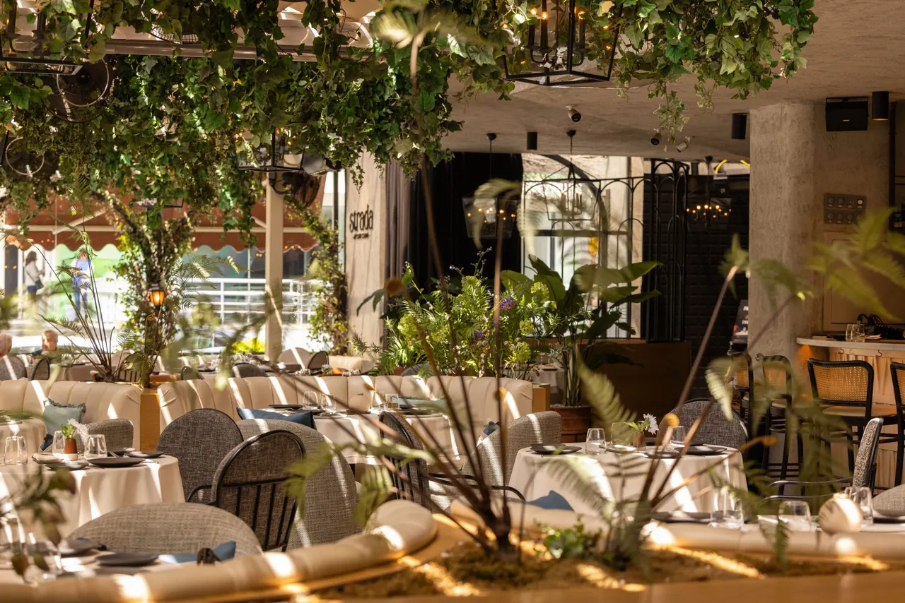
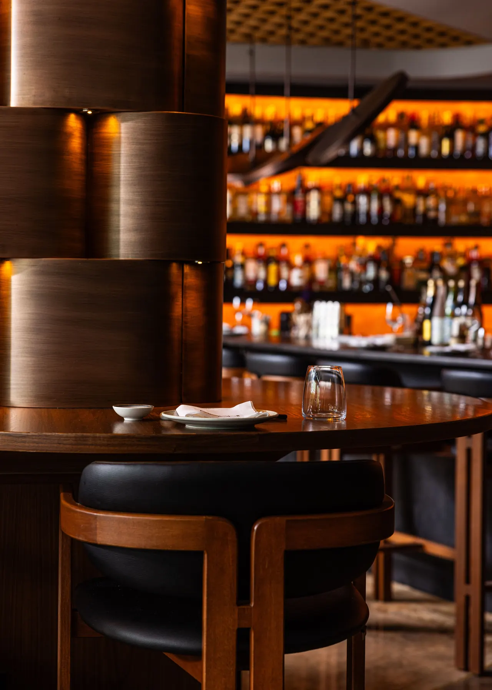
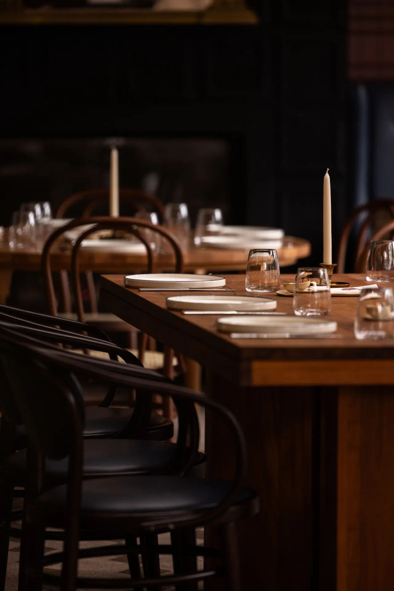
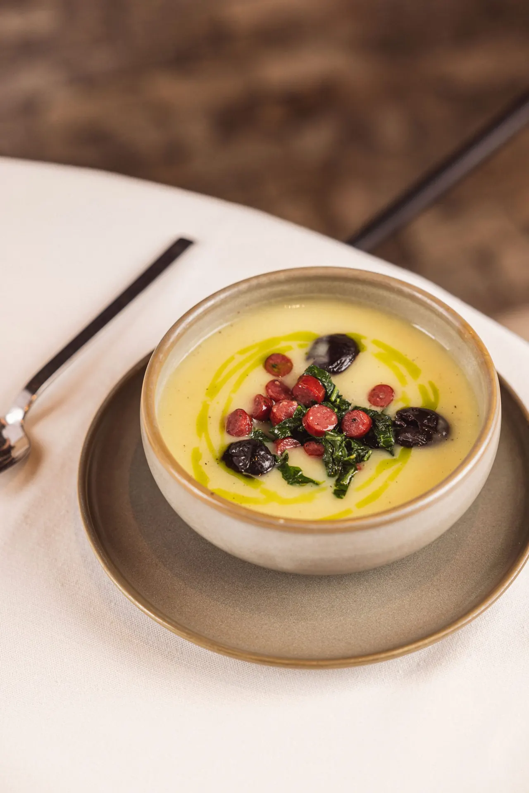

Strada Hissi ile 5 Yıl
Mekanı Keşfet: Strada Suadiye (yeni sekmede açılır)CafeCadde Family

Strada Hissi ile 5 Yıl
Mekanı Keşfet: Strada Suadiye (yeni sekmede açılır)
Sushi + Japanese + Peruvian cuisine, brought to you by Strada Suadiye
Mekanı Keşfet: Machi Suadiye (yeni sekmede açılır)
Coğrafyamızın lezzetleriyle şekillenen, bugünün şıklığında bir çağdaş lokanta.
Mekanı Keşfet: Süreyya Lokanta (yeni sekmede açılır)
Hikâye 1994'te Bağdat Caddesi'ndeki Cafe Cadde'de başladı. O köşeden ayrıldık; Cafe Cadde'nin ruhu bugün Strada, Machi ve Süreyya Lokanta'da sürüyor.
Instagram'da Keşfet: CafeCadde Family (yeni sekmede açılır)Turanlı ailesinin yolculuğu Bağdat Caddesi'ndeki Cafe Cadde ile başladı. O köşeden ayrılsak da hikâye bugün üç restoranda sürüyor.
Özel deneyimler sunan bir aile işletmesi ve restoran grubu.
Uygulama
Lezzetli buluşmalar, cazip avantajlar.
İletişim